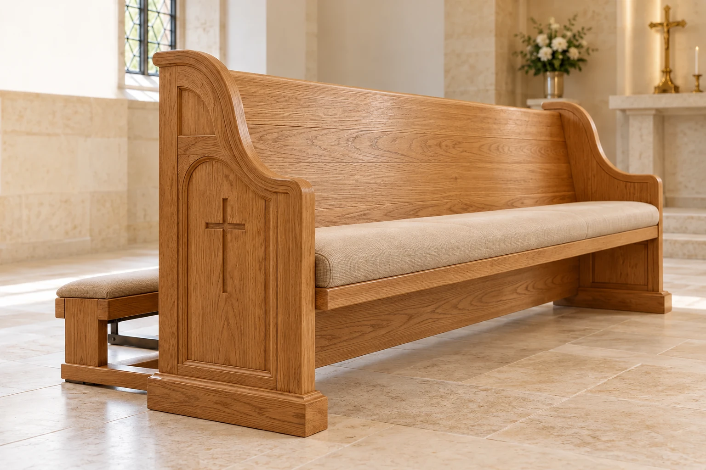
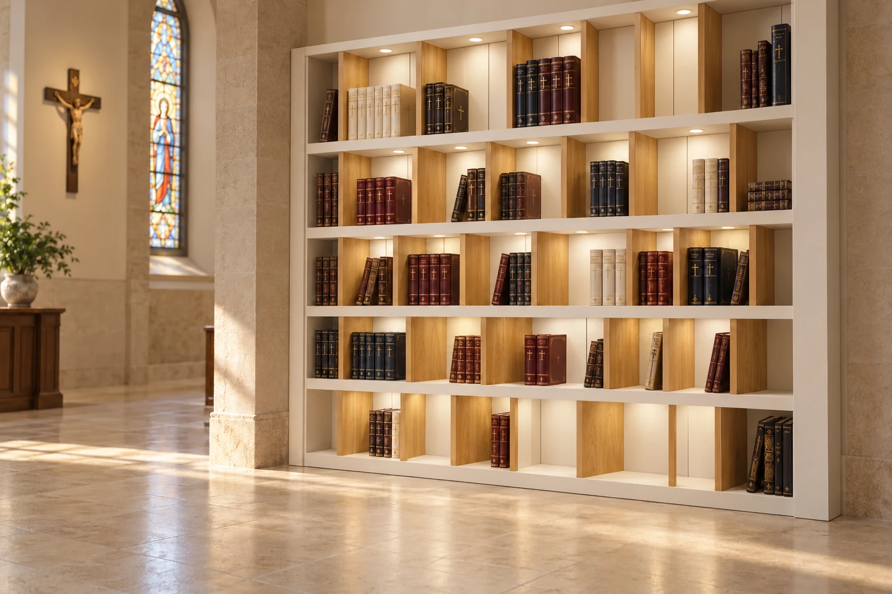

A considered detail
The art of
keeping what matters.
Libraries and storage carry the language of an interior through proportion, material and careful detailing.
Explore storage ↗Objects that bring a sense of harmony to sacred spaces. Wood, light and form in dialogue with the architecture of the church.
Explore the collection ↘
Derech · furnishings for the churchEvery piece begins with a place: its light, rhythm and the traditions of its community.
Explore pews, chairs, altar furnishings, sacristy furniture and storage. The concepts are a starting point for a design tailored to each space.Browse the Legno-Dura-Öl sample finishes in solid oak and beech. Each wood has 20 finish references, shown here with their original LAM codes.
Selected finish: Oak · LAM 0101
Photographs are visual references; the appearance can vary with wood grain, lighting and screen settings. Please confirm the final shade against a physical sample.

Libraries and storage carry the language of an interior through proportion, material and careful detailing.
Explore storage ↗Selected completed Israber synagogue projects show our workshop’s experience with custom furniture, finishing and installation.
These are Jewish worship spaces. The Catholic furniture elsewhere in this catalogue is presented as design concepts; it does not depict completed Catholic commissions.
Project photography and details: Israber completed projects ↗
Made to order and adapted to the space.
Price on request